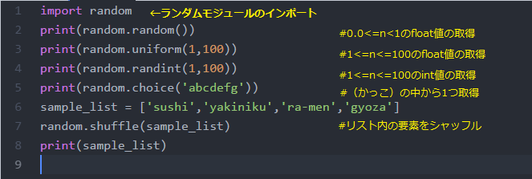

B.最高点を100点満点とし、間違えるたびに減算し、正解時に結果を出力します。0点になったらゲームオーバーでもよい。
C.正解後、もういちど遊ぶかどうか確認します。
▼実行結果の例

pythonで乱数を扱うには「randomモジュール」を呼び出します。
いろんな乱数の取得方法が用意されています。これは書かなくてもよいです。結果だけ確認してください。

▼実行結果（実行するごとに出力結果は異なります。）
コンピュータで生成するでたらめな整数を当てるゲームを作成します。
まずは1から100までの数を当ててみましょう。まちがった場合は、「正解より大きい」か「正解より小さい」かヒントを出します。
正解したところでゲームは終了です。
問題18のプログラムをもとに、つぎの中からできそうなものを選びプログラム文に追加していきます。
A.ゲームの難易度が選べるようにする。例えば、簡単→10までの整数、普通→100までの整数、鬼→1000までの整数が出題されます。
B.最高点を100点満点とし、間違えるたびに減算し、正解時に結果を出力します。0点になったらゲームオーバーでもよい。
C.正解後、もういちど遊ぶかどうか確認します。
▼実行結果の例